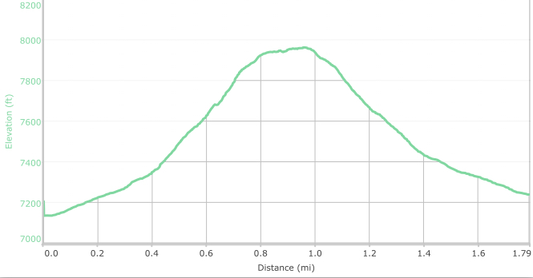

Hike New Mexico
w/ Tom & Ken
Sun Mountain, Santa Fe
| Difficulty | Round-trip | Type | Elev. Chg. | Exposure | Wow Factor | Facilities | Seasons | Flickr | Get There |
|---|---|---|---|---|---|---|---|---|---|
| Medium-Easy | 2 miles | Out-and-back | 840 ft | Full sun | Local views | None | Not Winter | Album | Directions |



- Apr 7, 2016: Tom begins the hike up
- Apr 7, 2016: Not far up the view improves
- Apr 7, 2016: Sandia view en route
- Apr 7, 2016: Atalaya Mtn and Ridge from Sun Mtn
- https://www.flickr.com/photos/139088815@N08/26024832280/in/photostream/
- https://www.flickr.com/photos/139088815@N08/26271761686/in/photostream/
- https://www.flickr.com/photos/139088815@N08/26297709985/in/photostream/
- https://www.flickr.com/photos/139088815@N08/26271768356/in/photostream/
Sun Mountain is located on Old Santa Fe Trail Road in Santa Fe, and is a short but steep ascent providing lovely views of the surrounding area. Parking for the trail is on Santa Fe Trail, a small dirt pull-out. There is, nonetheless, a trail sign at the trailhead. This hike was found by word-of-mouth, and noticed on the AllTrails hiking app, although the most recent edition of Day Hikes ... (see references below), the Eighth Edition, now details the hike. The trail is well-used and, although local, does not overlook homes and commercial sites. From the peak, there is a nice view of Atalaya Ridge, another local Santa Fe hike.